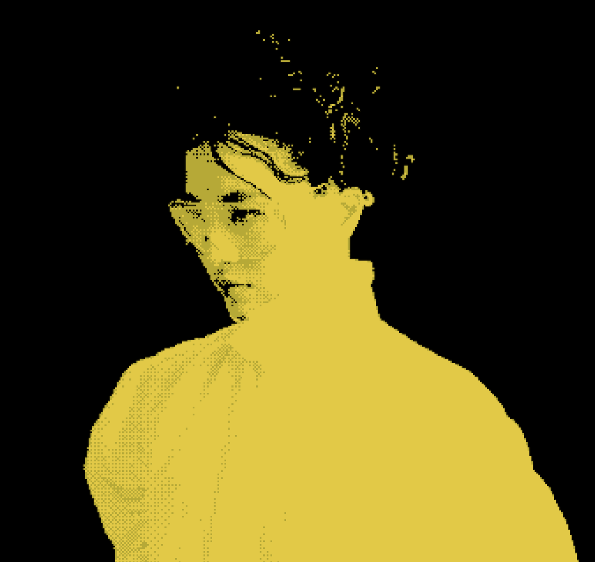
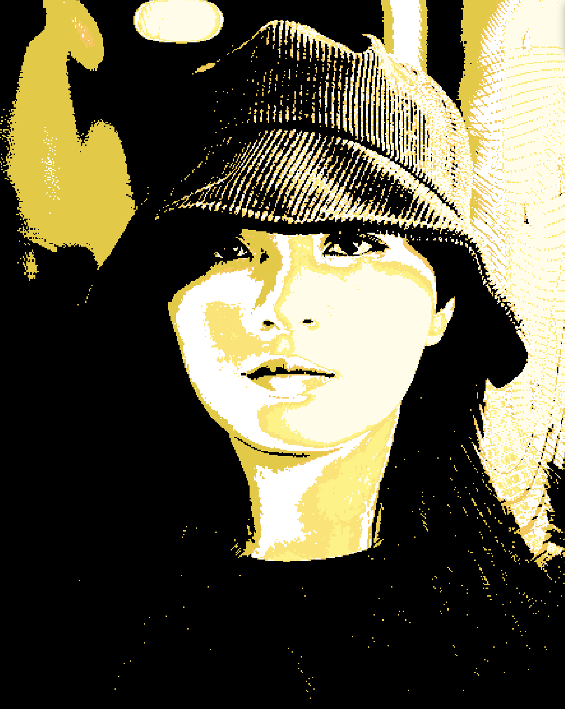
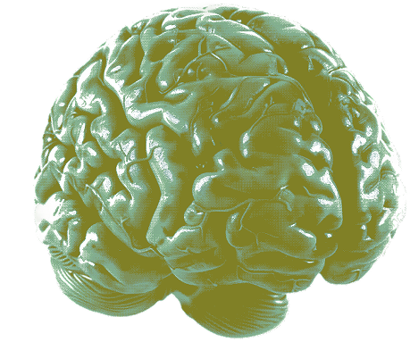
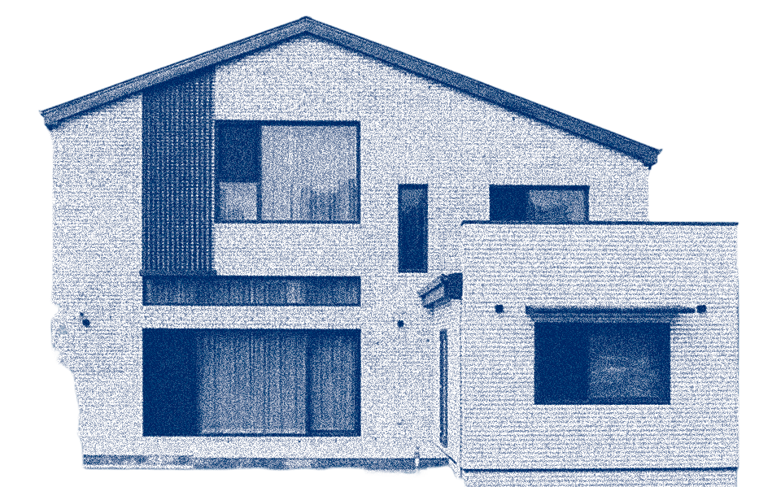

Flaw, flaw


Jclef — 아티스트 소개
Jclef(제이클레프)는 대한민국을 기반으로 활동하는 싱어송라이터이자 래퍼다. 본명은 허영진이며 1993년생으로, 예명 Jclef는 본명의 '영진'에서 따온 J와 음악 용어인 음자리표 'Clef'를 합친 것이다. 세상에 존재하지 않는 음자리표인 J Clef처럼, 기존에 없는 새로운 음악을 하겠다는 의미를 담고 있다. 어릴 때부터 음악이 꿈이었지만 부모의 반대로 수학과 과학을 공부하며 삼수 끝에 서강대학교 공과대학에 진학했고, 학교 음악 동아리를 통해 본격적으로 음악을 시작했다. 당시 동아리 규칙인 '래퍼는 가사를 쓴다'는 원칙이 그녀를 래퍼의 길로 이끌었다. 사운드클라우드에 음악을 올리기 시작해 2017년 첫 싱글 'multiply'를 발표했으며, 이후 쿤디판다, 창모, 사이먼 도미닉 등 국내 유명 래퍼들과 평론가들의 주목을 받으며 언더그라운드 씬에서 독보적인 존재감을 쌓아갔다. 사운드 엔지니어, 프로듀서, 디자이너, 사진작가 등으로 구성된 크루 biscuit häus(비스킷 하우스)의 멤버이기도 하다.
flaw, flaw — 앨범 소개
2018년 8월 14일 발매된 Jclef의 첫 번째 정규 앨범이다. 앨범의 출발점은 하나의 질문이다. 모든 사람은 저마다의 '흠(Flaw)'을 갖고 있다. 그러나 세상은 그 흠을 감추고 고치도록 강요한다. Jclef는 바로 그 자연스러운 결핍을 안아주지 못하는 세상에 대한 일말의 화(火)에서 이 앨범을 시작했다. 앨범은 흠이 있는 물건만을 챙겨 떠나는 하나의 '여행'을 주제로, 그 여행 안에서 만나는 동행자와의 관계, 그리고 그 관계 속에서도 온전한 '나'로 살아가기 어려운 감각을 섬세하게 그려낸다. 네오소울 사운드를 기반으로 한 미니멀한 프로덕션 위에 개인적인 이야기를 위화감 없이 풀어내는 작사 능력과 보컬 퍼포먼스가 맞물리며, 단순히 소비되는 음악이 아닌 사회적 메시지를 담은 독립 음악으로 높은 평가를 받았다. 음악 전문 매체 리드머에서 5점 만점에 4.5점을 기록했으며, 제16회 한국대중음악상 최우수 알앤비&소울 음반 부문을 수상했다. Jclef 본인은 수상 소감으로 "평생 받을 칭찬을 다 받은 것 같다"고 말했다.

DIVE IN ISLAND
우린 실체가 없을지 모를 섬을 위해
팔을 노 삼아 젓고 헤엄쳐가네 넌
날 무섭게 하는 속도를 가지고 있어
난 너가 날 놓고 가고 싶어질까봐 더
허둥지둥 팔을 젓지만 속도는 더 안나
거봐 이 바다는 눈치가 참 빨라서 나의
어설픈 폼새를 읽고
틈만 나면 삼키려 들잖아
나는 가끔 너의 손을 놓고 내 힘만으로
헤엄을 해보면 또 어떻게 될지가
난 궁금해
다만 문득 너의 눈을 바라 볼 때
호흡기까지 떼어 주고 싶어지는
나의 맘이 걱정돼
We dive in island
우린 섬에서 수영해
우린 실체가 없을지 모를 섬을 위해
나침반도 지도도 없이 계속해
넌 어떻게 날 위해 느리게 헤엄해
난 너의 짐과 닻이 되어
끌어내리지만 넌 나를 데려가네
손잡고 파도 타는 미친 짓을 해
내 생존은 너무나도 폐 같애
다만 넌 데려가는 미친 짓을 해
Feel like I'm drowning let me go oh
Sea's gonna devour me let it do oh
페에 차 바닷물이 더는 No
파도 보다 심해가 궁금한 걸
손을 놓고 말아
나를 두고 나아가
왜 굳이 나란 어려움과
함께 가려 하냐고 말아
넌 이것 보다 더
빠르게 도착할 수도 있잖아
예쁜 그 눈으로 내가 없다면
아무 의미 없다
말하지 좀 말란 말아
그러면 내가 포기할 수 없게 되잖아
그럼 또 살고 싶잖아 예
그럼 또 살게 되잖아 예

▶ DIVE IN ISLAND — Jclef (유튜브에서 듣기)
주스 온더 락
Hey rabbit
나의 기억에 있던 바다색은 모두
거짓 이었나봐
이 바다는 속내까지도
허락 해주네
So let us capture this Moment and
해먹에 올라
그물 자리를 흔들어 대면
나를 축으로 세상이 돌아
나를 위해 쓴 적이 없는
눈은 오롯이 내 것 같아
때 마침 건네 받은 메뉴 안에는
수많은 탈출을 도모하는 작전이 많아
(But mango passion It's enough for us right?)
All I need is just one rock of Ice
swimming on the juice pool yeah
너와 난 현실을 지내지만
산 적 없지 현재를
취기는 잘 떠오르게 할 테지
나와 너의 공통점을
허나 난 뭔가에 취해
생기는 연에 매인 적이 없지
그저 나는 아까워 취하기를
기다리는 찰나의 순간도
I can't wait wait
If you go fast I won't follow you
유리잔에다 따라
원색이 주는 이질감에 뿅 가자고
유리잔에 담긴 많은 색깔들은
단숨에 마셔도 문제 없을 거야
아이 아이 같은 맛과 아이 같은 말을
알아볼까 아마 문제 없을 거야 아이 아이
우린 많은 알콜을 입에 대곤 했지
단숨에 마시면 잃을 거야 정신을
매일 현실을 살아도 미래를 점치는
삶을 살았죠 우리는 그런 거야 아이 아이
이제 확신 못할 매일의 내일 집어치워
아침부터 해먹 위에 누워
우리 매일을 매일처럼
내일은 남의 일처럼 된 것처럼 말야
외계인 돌아 돌아 돌아 가는 세상처럼
섞어 얼음과 원색이 섞여 만든
이 달콤한 컬러 오롯이 날 덮어
돌아 돌아 돌아 가는 세상엔 안 섞여
얼음을 더 섞어 쥬스 온더 락 아이 아이
All I need is just one rock of Ice
swimming on the juice pool yeah
너와 나는 그저 달콤함 이면 돼
다른 것은 빼
빨강 노랑 주황색을 알아볼까
말처럼 해롭지는 않을 꺼야
아이 같은 맛 아이 같은 말을 알아 볼까
아마 문제 없을 거야 아이 아이
저기 저 사람들은 이야기를 이어가지
코알라의 말로 빨강색 노랑색 주황색
유리잔에 부어
유리잔에다 따라
원색이 주는 이질감에 뿅 가자고
Yeah we go yeah we go yeah we go

▶ 주스 온더 락 (Feat. OHIORABBIT) — Jclef (유튜브에서 듣기)
▶ 주스 온더 락 (Feat. OHIORABBIT) — Jclef (유튜브에서 듣기)
나는 생각이 너무 많아
Ey ey, 나는 생각이 너무 많아
생각의 고리는 너무 많이 돌아
제자리로만 거듭 다시 돌아와
알듯 말듯한 결론은 결국 달아나
뭐든 간파하는 넌 걸음이 꽤 빨라
뒤쳐지는 나를 위해 자꾸 돌아봐
넌 날 낙오시키는 법이 없을 것 같아
난 눈 안에 항상 사랑을 가득 담아
나는 말하기를 강요받아 왔어
너가 모르면 누가 아냐는 말이 이상 했어
얼른 내놔라 두 어깨를 잡고 흔들어서
나는 아무거나 짚이는 것을 토 했어
음 이런 건 대화라 불리면 안 되는 것 아닐까
입에 담아 튀어 오르는 대로
그건 정말이지 휘두르지만 않는 폭력이었고
너는 저지르는 법이 없어
U know how to love me right
난 언제나 말하는 것이 두려워
넌 그런 내게
그게 틀린 거라고 하지도
생각이 느려 말이 자꾸 접질려도
너는 절름거리는 날 향해 웃지 않아
네게는 이상하지 않으니까 (ey ey)
나는 생각이 너무 많아
생각의 고리는 너무 많이 돌아
제자리로만 거듭 다시 돌아와
알듯 말듯한 결론은 결국 달아나
뭐든 길이 드는 것에 넌 너무 빨라
익숙해져 버린 나를 두고 돌아가
아직 서투른 나는 어떡하지
생각만 하다가 끝없이 제 자리만 맴돌아
Ey, 어어어 어 어어어 어
네가 내게서 떠나는 소리
이번에도 난 여기에서 내려야겠지
익숙하잖아 언제나 혼자 오래 걷기
Yeah, yeah, 어어어 어 어어어 어
상처 주지는 않겠단 소리
하지만 그게 관통하네 나를 한 발씩
당연하지만 운명이란 없다는 사실
말해 왔잖아 몇 잔에 취해 always fine
마치 내 건강을 해친 건 술이 아닌 듯이
고마워 대신 그게 뭐야 외친 네 표정
난 하필 지금 생각이 났지
다시 발걸음을 돌려
예정에 없던 일을 만들고 싶지만
보나 마나 오히려 밑으로만 미끄러져
월트 디즈니 's quiet 너무 늦었어
나는 이대로 oh oh oh

▶ 나는 생각이 너무 많아 — Jclef (유튜브에서 듣기)
WAT'S YOUR HOUSE FOR
나도 알아 이걸론 어림도 없다는 걸
난 자꾸 네게서 도망쳐
내 집인 네가 무너져
집이란 네게는 어떠한 의미로 다가오니?
나는 말야 너와 있는 시간
어디든 내 집이 되지
What's your house for? House for?
커다란 집은 꿈의 목록에 없지
다만 난 나의 너가 집이 돼 주면
살아 갈 수가 있지
같이 덮은 이불이
우리의 집의 지붕이 되고
맞댄 살로 전해지는 체온이
나의 모닥불 이였지
예 내게 집이 된 널 부수겠어
망치를 들고 너를 겁줘
하지만 이미 너는 알아
내겐 그럴 용기가 부족한 걸 말야
오 나는 항상 착각을 잘했지
허리케인도 지진도 없지만
이 집은 무너질 것 같지
오 너가 나의 집이 되었을 때의
포근함은 아주 잠시
오 아주 작아지는 나와 달리
거대한 너의 덩치
난 이걸 다 후줄근한 바람이라고 착각 했어
난 너를 내 우주라 여기고
나만 있었으면 했어
넌 나로 충분할 지가 나는 항상 의아 했어
나의 불안은 애꿎은 손톱을 막 뜯어 냈어
I can't stand any more
역시 너의 밝은 눈은 세상을 보기 시작 했어
나만 살던 공간에 짐 들이 차올라
나를 몰아내고
망치를 들고도 부술 용기가 없는 난
널 겁주지만 너는 날 안아
내게 집이 된 널 부수 겠어
망치를 들고 너를 겁줘
하지만 이미 너는 알아
내겐 그럴 용기가 부족한 걸 말야

▶ WAT'S YOUR HOUSE FOR — Jclef (유튜브에서 듣기)
'사람들이 내 음악을 듣고 찔렸으면 좋겠다.
저 또한 당신에게 당신과 같은
좋은 친구가 되기를 바라며'
— Jclef


나는 가끔 너의 손을 놓고 내 힘만으로
헤엄을 해보면 또 어떻게 될지가
난 궁금해
다만 문득 너의 눈을 바라 볼 때
호흡기까지 떼어 주고 싶어지는
나의 맘이 걱정돼 . . .
.
.
.
.
.
.
.
.
.
나와 함께 가줄래?

Hey rabbit!
나의 기억에
있던 바다색은 모두
거짓 이었나봐
이 바다는
속내까지도
허락 해주네
So let us capture
this Moment and
해먹에 올라!

나를 위해 쓴 적이 없는
눈은 오롯이 내 것 같아
나는 생각이 너무 많아
생각의 고리는 너무 많이 돌아
제자리로만 거듭 다시 돌아와
알듯 말듯한 결론은 결국 달아나
뭐든 간파하는 넌 걸음이 꽤 빨라
난 눈 안에 항상 사랑을 가득 담아
난 언제나 말하는 것이 두려워
넌 그런 내게 그게 틀린 거라고 하지도
생각이 느려 말이 자꾸 접질려도
너는 절름거리는 날 향해 웃지 않아
Ey 어어어 어 어어어 어
상처 주지는 않겠단 소리
Ey ey, 나는 생각이 너무 많아

너가 모르면 누가 아냐는 말이 이상 했어
얼른 내놔라 두 어깨를 잡고 흔들어서
나는 아무거나 짚이는 것을 토 했어

나는 아무거나 짚이는 것을 토 했어
음 이런 건 대화라 불리면 안 되는 것
입에 담아 튀어 오르는 대로
그건 정말이지 휘두르지만 않는 폭력이었고
너는 저지르는 법이 없어
U know how to love me right

집이란 네게는 어떠한 의미로 다가오니?
나는 말야 너와 있는 시간 어디든 내 집이 되지
What's your house for? House for?
커다란 집은 꿈의 목록에 없지
다만 난 나의 너가 집이 돼 주면 살아 갈 수가 있지
같이 덮은 이불이 우리의 집의 지붕이 되고
맞댄 살로 전해지는 체온이 나의 모닥불 이였지 예